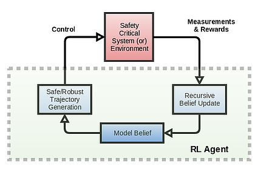
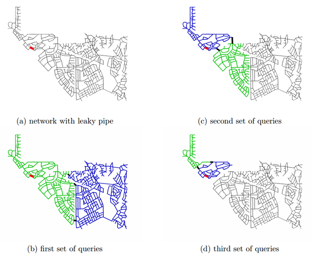
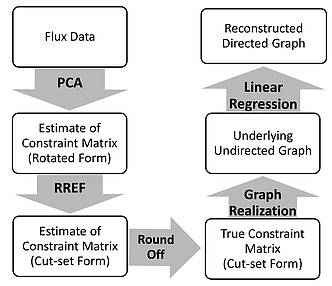

|
Research
Active Research Questions
Deep RL + robustness + transfer + multi-task
Mentors: Sergey Levine, Balaraman Ravindran, Emo Todorov
|
 |
I'm interested in RL methods that can train in simulation and transfer results seamlessly to the real world. One major hurdle to this grand goal is learning policies that are robust to and broadly competent for a range of models and parameters. RL and optimal control methods are remarkably proficient in exploiting all structural regularities in the simulator, which hampers their robustness to modeling errors. Thus, it is important to learn “regularized” policies in simulation to reduce sample complexity in the real world.
Very similar issues appear in transfer learning and multi-task learning where we want to learn regularized policies that capture the core common features of different tasks. My focus is on general algorithms predominantly in continuous settings which work out of the box without babysitting. This is work in progress with multiple collaborators.
|
Optimization issues in policy search
Mentors: Sham Kakade, Emo Todorov
The two major challenges in getting policy gradient methods to work are: (a) low-variance estimates of the advantage function; (b) picking the correct step size. I'm addressing both of these questions both from a representation perspective as well as an optimization perspective.
Model based Reinforcement Learning
Mentors: Sham Kakade, Emo Todorov
Model-free RL algorithms, due to their high sample complexity, demand use of a simulator – effectively making them model based. Considering that a simulator will be used anyways, how can we utilize the available explicit model information for fast policy search?
Previous Projects
Hierarchical graph segmentation for anomaly detection
Mentors: Balaraman Ravindran, Shankar Narasimhan, Sridharakumar Narasimhan
|
 |
In nearly all infrastructure systems, it is important to find and fix anomalies quickly. The type of anomaly could vary greatly from domain to domain, but all of them share certain core properties. For example: thefts, leaks, and sensor bias appear as violation of mass or energy conservation in water networks, supply chains, and smart grids. Fast rectification of these anomalies is critical for financial viability and quality control – in water networks, nearly 25% revenue is lost due to leaks and thefts.
Detecting these anomalies requires a mix of pre-installed on-board sensors and use of additional sensors in query on demand fashion. We have developed an algorithm for solving the optimal sequence of queries needed to find the anomaly with minimum probes/queries.
We have reported results on benchmark water networks. The method is much more general, and we are currently working on publishing a generalized algorithm that works for most infrastructure systems.
|
Network Topology Identification
Mentor: Shankar Narasimhan
|
 |
An important characteristic of interpretable statistical models are their structure. When models take specific structural form, it is possible to attribute meaning to different terms. In most cases, we have only broad characteristics of these structures like non-negativity in NMF (eg topic models and chemometrics) or sparsity in compressed sensing and SPCA.
In this project, I studied the problem of recovering relationships between variables which takes the form of a flow network structure. The setup takes the form of an unsupervised learning problem to recover the network topology. This corresponds to any scenario involving conserved quantities. We have used this method for topology identification in smart grids and water networks – both of which have important practical applications.
|
|